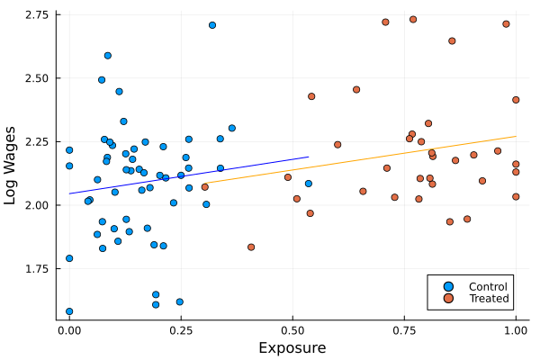

Replication: Urban Public Works in Spatial Equilibrium
This document contains my replication of the main results of Urban Public Works in Spatial Equilibrium (2023) by Franklin, Imbert, Abebe, and Mejia-Mantilla. The paper analyses the results of a randomised control trial which randomly assigned poorer areas of Addis Ababa, Ethiopia, to public works projects aimed at neighbourhood improvement. I replicated five of the paper’s main results (tables 2, 3, 4, and 6 as well as figure 2) in Julia, as well as table 5, which I replicated using Julia’s RCall package for reasons which I expand on below. The code takes significantly longer to run than the original R version, which is surprising given Julia is generally faster than R - the slow down seems to be mostly due to the many regressions necessary to calculate the RI p-values for table three, for these I have tried several different solutions, including both multithreading the loop which runs them (though the FixedEffectsModlels.jl package already should multithread each regression), as well as the @fastmath macro - however while multithreading brings a slight performance increase, the speed remains very slow.
T2 Treatment Effects on Labour Outcomes
I first replicate the results on the direct effects of the public works program on employment and amenities using the specification: \[ Y_{whi} = \alpha Y_{whi}^0 + \beta T_i + \delta X_{whi} + \varepsilon_{whi} \]
Where \(Y_{whi}^0\) is a worker’s outcome at baseline, and \(X_{whi}\) is a set of worker controls at baseline. This is a direct intention-to-treat estimate, as within each area \(i\) there are both eligible and non-eligible workers \(w\). The identification assumption is that the randomisation was succesful. Results are identical for the employment specifications, and only slightly different for the Neighbourhood Amenities column. These small differences may be due to differences in the controls used - here, as in the replication package, I only use subcity fixed effects in the neighborhood amenities column, whereas in the paper it is mentioned that individual controls are also used. I also tried replicating the specification where additional controls are selected using a GLMNet process, but for me this selected a different set of controls than in the R replication package.
| Employment | Public Employment | Private Employment | Neighbourhood Amenities | |
| (1) | (2) | (3) | (4) | |
| Treatment | -0.001 | 0.046*** | -0.047*** | 0.570*** |
| (0.012) | (0.002) | (0.012) | (0.077) | |
| Subcity Fixed Effects | Yes | Yes | Yes | Yes |
| Controls | Yes | Yes | Yes | |
| Observations | 19,442 | 19,442 | 19,442 | 5,712 |
| Control Mean | 0.366 | 0.0 | 0.366 | 0.0 |
| Employment | Public Employment | Private Employment | Neighbourhood Amenities | |
| (1) | (2) | (3) | (4) | |
| Treatment | 0.021 | 0.101*** | -0.080*** | 0.603*** |
| (0.015) | (0.003) | (0.014) | (0.083) | |
| Subcity Fixed Effects | Yes | Yes | Yes | Yes |
| Controls | Yes | Yes | Yes | |
| Observations | 8,679 | 8,679 | 8,679 | 2,409 |
| Control Mean | 0.36 | 0.0 | 0.359 | -0.007 |
| Employment | Public Employment | Private Employment | Neighbourhood Amenities | |
| (1) | (2) | (3) | (4) | |
| Treatment | -0.001 | 0.046*** | -0.047*** | 0.570*** |
| (0.012) | (0.002) | (0.012) | (0.077) | |
| Subcity Fixed Effects | Yes | Yes | Yes | Yes |
| Controls | Yes | Yes | Yes | |
| Observations | 19,442 | 19,442 | 19,442 | 5,712 |
| Control Mean | 0.366 | 0.0 | 0.366 | 0.0 |
Wage Effects
I now replicate the paper’s results on the effects of the public works program on wages. For this purposes the naive specification above is unlikely to be appropriate as there are likely spillover’s between treated and non-treated areas due to commuting patterns - this means the Stable Unit Treatment Value Assumption (SUTVA) is unlikely to hold. The authors construct a spatial equilibrium model which emphasises that due to commuting, the effects of the program are likely captured in changes by wage changes at the place of work rather than the place of residence. By ignoring endogenous changes to commuting patterns the authors can then take the model to the data by constructing an exposure variable: \[ Exposure_j = \sum_i \lambda_{ij} T_i - \frac{1}{R} \sum_{0 \leq r \leq R} \sum_i \lambda_{ij} \tilde{T_i^r} \]
Where \(T_i\) is a dummy for the implementation of the program in neighborhood of residence \(i\) and \(\lambda_{ij}\) is the probability at baseline that a worker who works in neighbourhood \(j\) lives in neighbourhood \(i\). The second term is a recentering of actual exposure using average potential exposure from 2000 simulated independent treatment asignments which follow the same random allocation, which avoids omitted variable bias. This is similar to a shift-share instrument, with \(\lambda_{ij}\) the endogenous share, and \(T_i\) the exogenous shift. On the assumption that the the randomisation of treatment was succesful, \(\beta\) in the following equation then captures the causal effect of program exposure on wages: \[ \ln w_j = \alpha + \beta Exposure_j + \gamma \ln w_j^0 + \delta X_j + \varepsilon_j \]
F3
I now succesfully replicate figure three. Figure three is a scatter plot of average log wages in an area on the exposure variable above, separated into those areas which were actually treated and those that were not, showing a similar positive association between exposure and wages, with little discontinuity between the two groups.

T3 Wage Effects
Table three presents the results of both the exposure specification presented above, and a simple regression with controls of log wages at origin on treatment at origin, which for the reasoning above does likely not produce an unbiased estimate due to violations of SUTVA.
| Log wages at origin | Log wages at destination | |||
| (1) | (2) | (3) | (4) | |
| Treatment at Origin | 0.102** | 0.093* | ||
| (0.037) | (0.040) | |||
| Exposure of Destination | 0.214** | 0.186* | ||
| (0.074) | (0.074) | |||
| subcity Fixed Effects | Yes | Yes | ||
| Controls | Yes | Yes | Yes | Yes |
| Observations | 90 | 90 | 90 | 90 |
| RI p-values | 0.023 | 0.007 | 0.000 | 0.001 |
| Worker Controls | No | Yes | No | Yes |
T4 Valuing Amenities through correlation with rent.
I now replicate table four. To estimate the welfare value of the improvements to neighbourhood amenities estimated in table 2 above, it is necessary to convert these into a monetary equivalent, to do this the authors combine information on rents paid by households who do pay rent and estimated hypothetical rents for those who do not. To deal with potential omitted variable bias, i.e. characteristics that may be correlated both with neighborhood quality and rents, the authors implement a double post-selection lasso procedure to select the controls which best predict either neighborhood quality or rents. My results are almost identical to the original specification, but I seem to have a slightly larger sample which leads to small differences.
| Log Rent | ||
| (1) | (2) | |
| Neighborhood Quality | 0.046** | 0.044*** |
| (0.017) | (0.013) | |
| subcity Fixed Effects | Yes | Yes |
| Controls | Yes | |
| Observations | 4,753 | 4,753 |
T5 Gravity
I now replicate table five, where the authors the commuting probability on the log wage at destination, in order to identify the key model parameter \(\theta\), which is known as the Frechet parameter - or the elasticity of commuting probability to distance. The authors leverage the experiment by instrumenting the log wage at destination with the destination’s exposure to treatment, in the following specification where \(d\) is log walking time and \(\nu_i\) is a residence fixed effect:
\[ \ln \pi_{ij} =\theta \ln w_j + \kappa \theta \ln d_{ij} + \nu_i + \varepsilon_{ij} \]
Unlike my main five replication results, I replicate this result mainly using the original R code and the RCall package in Julia. While I originally intended for this to be one of my five main replicated results, I was unable to use the GLM.jl package for the necessary poission regressions. I think this may be something to do with problems dealing with imported Stata .dta files with GLM.jl, which is not compatible with the Float32 data-type most .dta data is imported into Julia as, however problems persisted after converting to Float64 despite the package working with other data. As a result I decided to replicate another result in Julia, but I still included this using RCall as it is a key result which is necessary to then construct table 6. My results are identical, except for a slightly larger standard error on the effect of log destination wage on commuting probability.
| Dependent variable: | |||
| Commuting Probability | Log Destination Wage | ||
| Poisson | OLS | ||
| (1) | (2) | (3) | |
| Log Destination Wage | 0.499 | 2.077 | |
| (0.299) | (1.219) | ||
| Destination Exposure to Program | 0.188 | ||
| (0.074) | |||
| Log walking time | -2.106 | -2.127 | 0.014 |
| (0.103) | (0.103) | (0.031) | |
| Observations | 7,744 | 7,744 | 7,744 |
| Log Likelihood | -Inf.000 | -Inf.000 | |
| Akaike Inf. Crit. | Inf.000 | Inf.000 | |
| Note: | All specifications include origin fixed effects | ||
Model Parameters
I now follow the authors using the experimental results to parametrize the model as follows:
\(\Delta L_i\) is the change in total employment in the reduced form ITT.
\(p\) is the change in private sector employment in the reduced form ITT.
\(L_i\) is the employment rate in the control.
The wage premium \(g\) is the difference between log earning on public works at endline in treatment and log earnings on private sector work at baseline.
The change in the wage at destination is a function of exposure to the treatment: \[\widehat{w_j}=\delta*\sum_k \pi_{kj} T_k\]
where \(\delta\) is the coefficient on exposure in the previous estimation.
\(\beta_i\) is the product between the increase in neighborhood quality and the correlation between neighborhood quality and rents.
\(\theta\) comes from the gravity equation.
Note that FE_W_woreda_weight variable does not appear to be available in the provided dataset, so non-individual means are unweighted (unless the variables have been pre-weighted or something).
| Keys | Values |
|---|---|
| String | AbstractFloat |
| Wage Effect | 0.18565 |
| L_i | 0.366 |
| β_i | 0.0247456 |
| w_g | 2.50352 |
| θ | 2.07696 |
| Δ L_i | -0.00060433 |
| p | 0.128556 |
T6 Welfare
Using the paremetrization above I now replicate table six, which uses the model to conduct a welfare analysis of the effects of the program on both control and treatment groups for the partial rollout of the program, as well as for a hypothetical complete rollout of the program. My results slightly differ from those in the paper, but are very close throughout. From the model, the expression of changes in welfare is the following:
\[ \widehat{U_{i}} = (1+\beta_i)\left[ p T_i (1+g_i) \pi_{ii}^{\frac{1}{\theta}} + (1-p T_i) \left(\sum_j \pi_{ij} (\widehat{w_{j}})^\theta\right)^{\frac{1}{\theta}}\right] \] And we can benchmark the welfare effects of the program with a cash transfer.
\[ \widehat{U_{i}^{cash}}=\left[1+p (1+g_i)\pi_{ii}^{\frac{1}{\theta}} \right] \]
| Roll-out | Control | Treatment | All |
|---|---|---|---|
| Treatment | 0.0 | 1.0 | 1.0 |
| Exposure | 0.159 | 0.797 | 1.0 |
| Direct Effect | 0.0 | 0.028 | 0.031 |
| Direct + Wage Effects | 0.045 | 0.132 | 0.193 |
| Direct + Wage + Amenity | 0.045 | 0.16 | 0.223 |
| Cash Transfer | 0.0 | 0.157 | 0.16 |